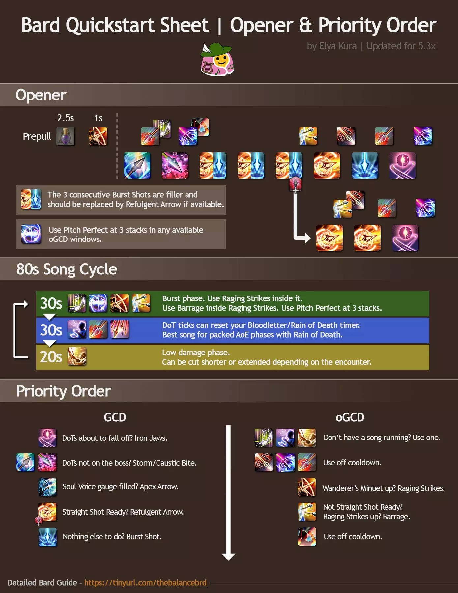

SO, WHAT IS A BARD?
Well, Bard is a ranged physical DPS class in the MMO Final Fantasy 14.
Bard's are well known for their mobility and song playing ability. However one thing they aren't known for, is doing damage.
Or well at least that's what you'll hear from a lot of people in the community, it does plenty of damage, it's just not as much compared to the other jobs available to you. However, Bard is given a lower damage overall due to about half of it's kit being about buffing your team with your songs. And with the release of Endwalker it'll be gaining another way for you to buff your party members so it's much better to consider this class' DPS along with how much MORE damage you're causing the rest of your party to do.
So how do you play Bard?
Now the biggest thing you need to know about when it comes to playing bard is obtained from a man named Simpkin located in Old Gridania. Once you hit level 30 on Bard he'll have a quest called Plucking the Heartstrings.
Once you complete this quest you'll get the ability to pull out a plethora of instruments and play music using the in-game keyboard!
...This is how far most people get with playing Bard before changing to a more enjoyable job.
How to actually play Bard
Now in all seriousness, Bard isn't really all that complex of a job, it's got a very simple rotation of skills that makes it pretty easy to just pick up and play. It has two things it needs to keep track of throughout a fight but outside of that, it's pretty free-flowing as to what you can do.
Bard Rotation
As you can see from the lovely image below taken from Salted Earth. The rotation can be boiled down to 3 phases. Your damage phase in your first song, your less damage phase in song two and 20 seconds of being useless aka Army's Paeon.
Rotation Breakdown
The core of playing Bard comes from these 3 abilites.
Wanderer's Minut, Mage's Ballard and Army's Paeon.
Wanderer's Minut is like your best friend who agrees to do things with you but almost never shows up to whatever it is. It's your main song when it comes to actually doing damage and is always the song you want to use first in your rotation. It can range in damage based on your luck as getting procs for it comes from your two damage over time (DoT) abilities
Mage's Ballard is the song that'll make you wish you'd put Bloodletter on a better keybind when you first got the ability. It once again procs based off of your two DoT abilites and provides you with a chance to instantly refresh the cooldown of your ability Bloodletter, a normally 15s CD spell.
Your final song is called Army's Paeon.
Things that aren't songs but also aren't shooting arrows
Now I've already lied to you since the first ability I'll tell you about is technically a song called Battle Voice. This song has a monsterious CD of 180s however this unlike the other 3 songs, does not override whatever song you're playing and instead uses it in tandem with the active song. This is your best raid-wide buff of a +20% direct hit chance for everyone (except you).
The other two for you two care about are usually used together so I'll talk about them together. Raging Strikes is Bard's only damage buff giving Bard 20% damage increase for 20 seconds. You always want to make sure this lines up with you using Wanderer's Minut for optimal damage. The other ability you always want to make sure falls into this Raging Strikes window is Barrage. This ablility fires off whatever next GCD you use, it also grants you "Straight Shot Ready" which is the GCD you want to use it in-line with.
I'll start by giving a short explanation of what a GCD is.
GCD means Global Cooldown and this is the cooldown timer shared by a handful of ablilites. All these cooldowns are normally quite low ranging between 2s and 2.5s. These ablilites are normally what determines what your rotation will be but of course like a dumbass I chose one of the two classes that doesn't really follow that ruling.
Now for the GCDs Bard has.
We'll start with the one you'll without a doubt be using the most, Burst Shot.
Burst Shot is an upgrade to the very first ability you get on Bard (Heavy Shot) which is an attack with a potency of 250 with a normal CD of 2.5s. Burst shot also has a 35% chance to grant you the buff "Straight Shot Ready" which I mentioned earlier with Barrage.
Refulgent Arrow (The upgrade to Straight Shot) is Bard's second highest potency GCD at 340. This ablility has no additional effect besides having a really cool animation.
I'm gonna talk about Caustic Bite and Stormbite together since you never want to have just one on a target. These two GCDs are your DoTs and you will learn to hate them. Both of them are neccessary for a) optimal damage and b) your procs from the songs I talked about earlier. However since FFXIV felt bad for Bards they decided to give them ability that let's you reset the 30s timer for both at the same time called Iron Jaws, if only they'd give us one to spread them like Summoner..